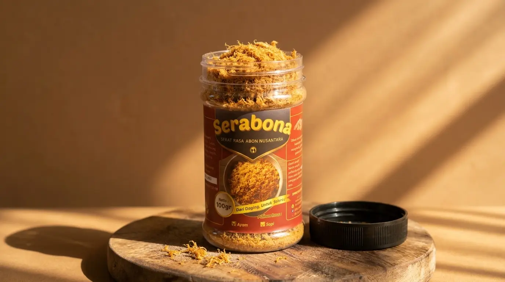

Dikemas dalam toples botol jar PET food-grade dengan seal aluminium pengaman, menjaga kerenyahan kacang dan kelezatan serat abon tetap higienis.
Serabona - Abon Ayam Spesial 100g
Rp 17.000 / toples jar (100g)
"Cita Rasa Nusantara, Serat Khas Abon!" Olahan abon ayam murni dengan serat daging yang lembut gurih, diperkaya taburan kacang tanah sangrai renyah dan bumbu rempah pilihan. Lauk praktis nikmat untuk sahur, berbuka, bekal, dan teman makan nasi hangat.
Artha
PIC Pemesanan & Layanan Pelanggan Serabona
WhatsApp: +62 813-3363-3565 • Jam Layanan: 08.00 - 17.00 WIB
Instagram: @bon_boniga
Keunggulan Serabona Abon Ayam
- 100% Daging Ayam Pilihan: Menggunakan bagian dada ayam tanpa lemak yang disuwir halus, menghasilkan tekstur serat asli tanpa campuran tepung berlebih.
- Taburan Kacang Sangrai Gurih: Kombinasi unik kacang tanah sangrai memberikan sensasi renyah 'kriuk' di setiap suapan.
- Kemasan Jar Kedap Udara: Wadah botol jar kokoh dan kedap udara, sangat praktis dibawa bepergian, traveling, umroh, atau disimpan di meja makan.
- Rasa Gurih Manis Pas: Bumbu rempah bawang merah, bawang putih, lengkuas, dan ketumbar yang meresap sempurna.
Spesifikasi & Detail Produk
Informasi komposisi bahan dan mutu Serabona Abon Ayam 100g.
| Nama Brand | Serabona (Serat Rasa Abon Nusantara) |
|---|---|
| Kategori Produk | Abon Unggulan Nusantara |
| Bahan Utama | Daging Dada Ayam Segar & Kacang Tanah Sangrai |
| Berat Bersih (Netto) | 100 gram |
| Komposisi Bahan | Daging ayam pilihan, kacang tanah, bawang merah, bawang putih, ketumbar, lengkuas, daun salam, gula merah, garam beryodium, minyak nabati |
| Jenis Kemasan | Toples Botol Jar PET Food-Grade dengan Tutup Ulir & Seal Pengaman |
| Masa Simpan (Expired) | 4 - 6 Bulan (Simpan di tempat kering dan sejuk) |
| Asal Produksi | Malang, Jawa Timur - Indonesia |
| Saran Penyajian | Taburkan langsung di atas nasi hangat, bubur ayam, mie kuah/goreng, roti tawar, atau camilan sahur cepat |
Lauk Andalan Siap Santap
Serabona Abon Ayam adalah penyelamat waktu makan Anda. Saat waktu terbatas untuk memasak saat sahur, sarapan pagi kilat anak sekolah, atau persediaan lauk anak kos, Serabona menyajikan kelezatan tinggi protein yang siap dikonsumsi kapan saja tanpa perlu dipanaskan kembali.